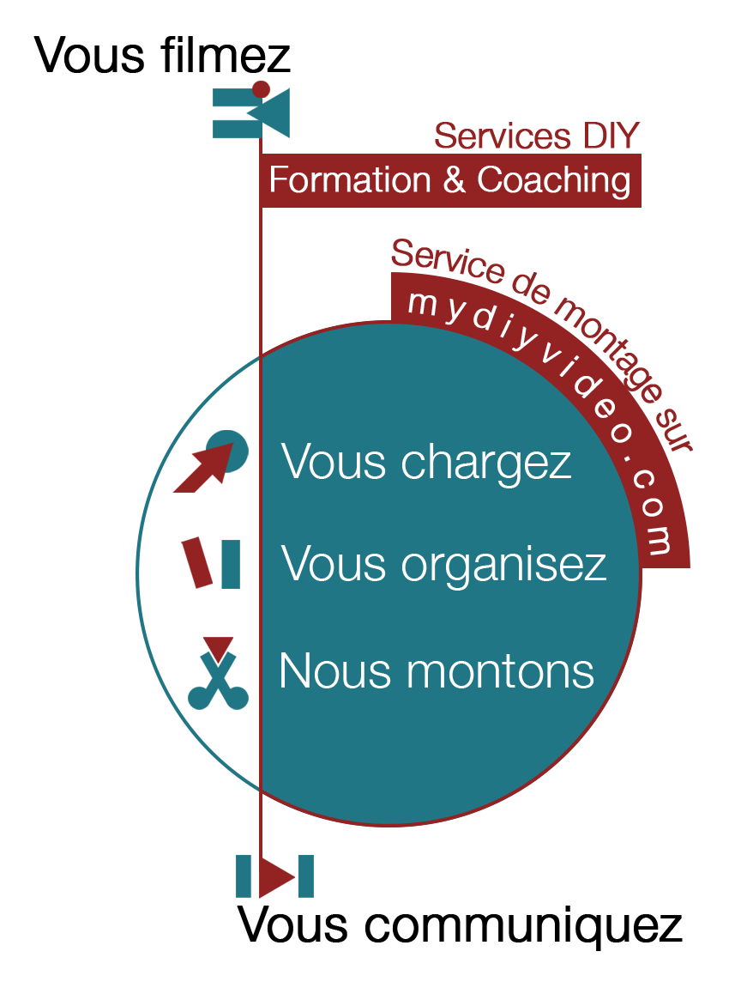

Un film, c'est du tournage
Vous filmez et mydiyvideo.com vous accompagne avec des formations et/ou du coaching
Un film, c'est aussi un bon montage
mydiyvideo.com est la plateforme de référence pour faire monter vos vidéos par des pros
La vidéo est le média de communication incontournable pour promouvoir vos activités, pour
informer, sensibiliser, enseigner.
Bien plus efficace est économe que les mailings, les newsletters, les brochures ...
Nous vous accompagnons dans la création de vos vidéos en vous proposant nos services "Do It
Yourself" afin de vous autonomiser et vous rendre le contrôle sur vos réalisations
audiovisuelles.
Que ce soit par des formations, du coaching ou grâce à notre plateforme innovante de montage
vidéo en ligne par des professionnels
Alors c'est parti ! Filmez dès maintenant
Initiation gratuite autour d'une rencontre
Qu’est-ce qu’un film de communication, comment ça se prépare, quelles sont les étapes clés,
plein de petits trucs et astuces pour bien démarrer votre film et utiliser notre plateforme mydiyvideo.com
Selon vos disponibilités, nous nous déplaçons gratuitement dans vos locaux et
en 1 heure, vous aurez déjà une bonne idée des moyens qui sont à votre disposition pour
vos propres films de com.
Formation sur les techniques de tournage
Vous avez forcément un téléphone ou une petite caméra pour filmer, mais vous ne savez pas trop
comment l’utiliser pour obtenir des images exploitables.
Nous vous proposons notre formation sur les techniques de base d’un tournage réussi :
cadrages, expositions, mouvements de caméra, techniques d’interview, …
Notre formateur se déplace dans vos locaux pour 4h avec son matériel et s’adapte au vôtre.
La formation est destinée à un petit groupe jusqu’à 6 personnes et alterne des contenus
théoriques avec des exercices de mise en pratique.
Coaching Audiovisuel
Vous êtes sur un projet réel de réalisation d’un film de com, mais vous avez besoin d’un peu
plus de support de la part d’un professionnel.
Nous vous proposons un accompagnement
personnalisé sur les différentes phases de votre vidéo.
Que ce soit pour la scénarisation, le tournage, les interviews …
Nous pouvons vous apporter
une aide à distance ou sur place selon votre convenance.
La plateforme de montage video MyDIYVideo.com
Le montage vidéo est certainement la phase la plus consommatrice de temps et celle qui demande le plus de capacités techniques. Notre plateforme mydiyvideo.com vous permet de gagner du temps et de vous débarrasser de cette étape épineuse à moindre coût. En effet, en fonction de la matière que vous chargez, vous pouvez obtenir un film de qualité dès 55€. Soit approximativement 10 fois moins chers qu’avec une agence de com traditionnelle. Il vous suffit de charger les vidéos et les photos que vous voulez voir montées dans votre espace personnel sur notre site. Indiquez alors en quelques mots la façon dont vous voulez voir votre film agencé et nos monteurs professionnels s’occuperont du reste. Pas de mauvaises surprises : avant même de passer commande, vous aurez une vision claire et précise du coût et du temps nécessaire à la réalisation de votre projet. Ce n’est seulement qu’après avoir validé le montage final que vous recevrez la facture pour paiement.
Une économie locale
En utilisant les services de mydiyvideo.com, vous participez à l’économie locale. Nos monteurs vidéo professionnels qui s’occuperont de vos films, tout en étant proche de chez vous, n’ont pas besoin de se déplacer ni dans une maison de production ni dans vos locaux. Ils travaillent à distance, chez eux, sur les mêmes outils que les studios de production. Grâce à notre plateforme en ligne nous assurons la coordination des projets et le respect de la qualité. C’est comme ca que mydiyvideo.com assure des petits prix sur vos montages vidéo tout en gardant une qualité et un service professionnel : pas de frais de déplacement, pas de coût dans une infrastructure lourde et une participation à 100% sur l’emploi local.